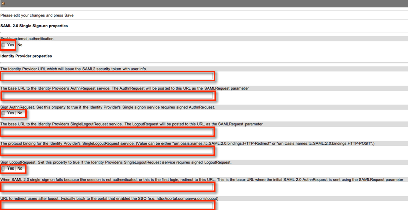
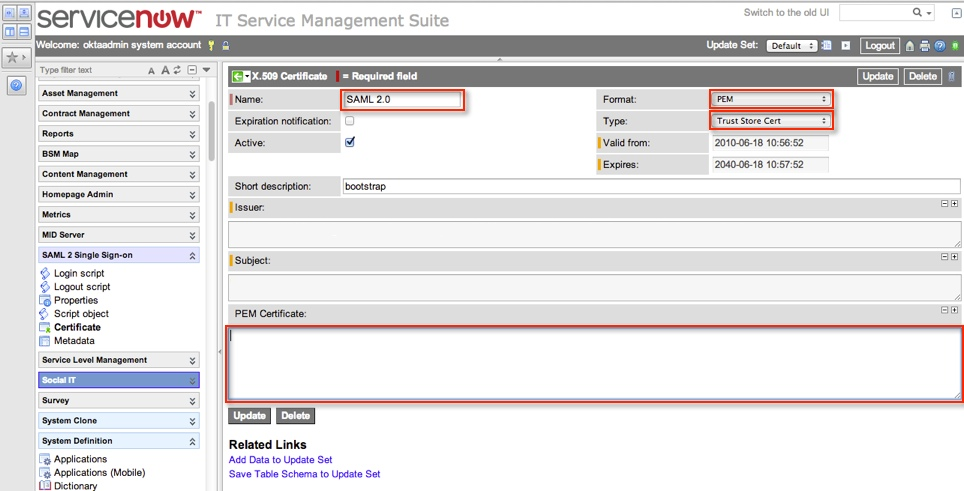

Ask your ServiceNow representative to enable SAML 2.0 in your instance.
As the system admin, go to the SAML 2 Single Sign-on section in ServiceNow.
Click on the Properties section. Refer to the following screenshot for steps 4 and 5.

Enter the following values in the SAML 2.0 Single Sign-on properties section.
Enable external authenticationYes
Enter the following values in the Identity Provider properties section. Leave the rest as defaults.
Sign into the Okta Admin dashboard to generate this value.
Sign into the Okta Admin dashboard to generate this value.
The base URL to the Identity Provider's SingleLogoutRequest service. The LogoutRequest will be posted to this URL as the SAMLRequest parameter.
Sign into the Okta Admin dashboard to generate this value.
When SAML 2.0 single sign-on fails because the session is not authenticated, or this is the first login, redirect to this URL. This is the base URL where the initial SAML 2.0 AuthnRequest is sent using the SAMLRequest parameter.Sign into the Okta Admin dashboard to generate this value.
urn:oasis:names:tc:SAML:2.0:bindings:HTTP-Redirect
Enter the user login page for ServiceNow; for example, https://acme.service-now.com.
Enter your homepage URL; for example, https://acme.service-now.com/navpage.do.
Enter the The Identity Provider URL from the first bullet in step 5, above.
Enter the user login page for ServiceNow; for example, https://acme.service-now.com.
urn:oasis:names:tc:SAML:1.1:nameid-format:emailAddress
urn:oasis:names:tc:SAML:2.0:ac:classes:PasswordProtectedTransport
Go to the x509 Certificate section. Refer to the following screenshot for step 8. 
Add a new certificate with the following properities:
NameSAML 2.0
FormatPEM
TypeTrust Store Cert
PEM Certificate – cut and paste the following certificate including the Begin Certificate and End Certificate lines into the PEM Certificate field.
Sign in to the Okta Admin app to generate this variable.